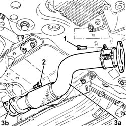
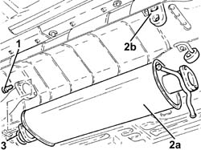
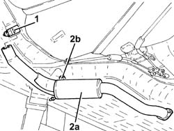
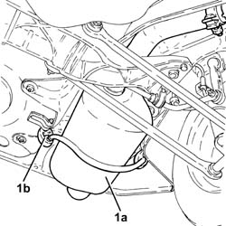
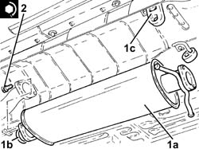
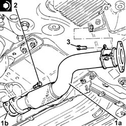

1076B10 exhaust pipe assembly - r + r
- Path
- Procedures > 10 ENGINE > 1076 EXHAUST PIPES AND SILENCERS > 1076B exhaust pipes and silencers > 1076B10 exhaust pipe assembly - r + r
- Kind
- repair procedure (removal / refitting; the operation number is the code)
- Applies to
- engines: 2.0 JTS, 2.0 JTS; all production periods
- Interactive page
- https://sloeber94.github.io/elrnDB-a156/en/#/3237749
Applies to: engines: 2.0 JTS, 2.0 JTS; all production periods
 Removing
Removing
 Refitting
RefittingPosition the vehicle on the ramp.
Ensure that the ignition key is in the OFF position, then disconnect the negative battery terminal.
 | Name | Connector |
|---|---|---|
- | Battery |
Drain the air conditioner coolant circuit 5040A10 Air conditioning refrigerant CIRCUIT - Draining and Refilling .
Proceed with removal 4450B04 right front wheel r r .
Proceed with removal 7055B54 under-engine guard - r r .
Proceed with removal 5040A20 air conditioner compressor - r+r - includes fluid level check and top up if necessary .
Proceed with removal 5040A26 compressor mount - r r .
Proceed with removal 1016A40 ignition coil cover on cylinder head- r+r .
Proceed with removal 1076A48 catalytic converter heat shield - r r .
Proceed with removal 1080B62 catalytic converter - r + r .
1. Undo the bolt securing the collar supporting the rigid exhaust pipe section between the catalytic converter and silencer to the relevant bracket.
2. Undo the bolts securing the rigid exhaust pipe section between the catalytic converter and silencer.
3. Remove the rigid exhaust pipe section between catalytic converter and silencer (3a) and rear gasket (3b).

Applies to: engines: 2.0 JTS, 2.0 JTS; all production periods
1. Undo the bolts securing the front exhaust silencer to the intermediate exhaust silencer.
2. Remove the front exhaust silencer (2a), after releasing it from the flexible mounts (2b).
3. Remove the seal.

Applies to: engines: 2.0 JTS, 2.0 JTS; all production periods
1. Loosen the collar fixing the rear exhaust silencer to the intermediate exhaust silencer.
2. Remove the intermediate exhaust silencer (2a) after releasing it from the flexible support (2b) and the rear exhaust silencer.

Applies to: engines: 2.0 JTS, 2.0 JTS; all production periods
1. Remove the rear exhaust silencer (1a) after releasing it from the flexible supports (1b).

Applies to: engines: 2.0 JTS, 2.0 JTS; all production periods
Refitting
RemovingRefit the rear exhaust silencer in its seating and secure it to the relevant flexible supports.
Refit the intermediate exhaust silencer in its seating, connect it to the rear exhaust silencer and secure it to the relevant flexible support.
Tighten the collar fixing the rear exhaust silencer to the intermediate exhaust silencer.
1. Refit in its seating the front exhaust silencer (1a) complete with seal (1b) and secure it to the flexible supports (1c).
2. Tighten the front exhaust silencer bolts to the intermediate exhaust silencer to the specified torque.
 | Fastening | Component | Ø | Value (daNm) |
|---|---|---|---|---|
2 | Bolt | FRONT EXHAUST SILENCER | M10 | (Intermediate exhaust silencer side) 5.9 ÷ 7.2 |

Applies to: engines: 2.0 JTS, 2.0 JTS; all production periods
1. Refit in its seatign the rigid exhaust pipe section between the catalytic converter and silencer (1a) complete with rear gasket (1b).
2. Tighten the bolts securing the rigid exhaust pipe section between catalytic converter and silencer to the specified torque.
| Fastening | Component | Ø | Value (daNm) |
|---|---|---|---|---|
2 | Bolt | RIGID EXHAUST PIPE | M10 | (Front silencer side) 5.9 ÷ 7.2 |
3. Tighten the bolt securing the collar supporting the rigid exhaust pipe section between catalytic converter and silencer to the relevant bracket.

Applies to: engines: 2.0 JTS, 2.0 JTS; all production periods
Proceed with refitting 1080B62 catalytic converter - r + r .
Proceed with refitting 1076A48 catalytic converter heat shield - r r .
Proceed with refitting 1016A40 ignition coil cover on cylinder head- r+r .
Proceed with refitting 5040A26 compressor mount - r r .
Proceed with refitting 5040A20 air conditioner compressor - r+r - includes fluid level check and top up if necessary .
Proceed with refitting 7055B54 under-engine guard - r r .
Proceed with refitting 4450B04 right front wheel r r .
Fill the air conditioner coolant circuit 5040A10 Air conditioning refrigerant CIRCUIT - Draining and Refilling .
Connect the negative (-) battery terminal.
Remove the car from the ramps.
Topics linked from this page (9)
- 1016A40 ignition coil cover on cylinder head- r+r
- 1076A48 catalytic converter heat shield - r r
- 1080B62 catalytic converter - r + r
- 4450B04 right front wheel r r
- 5040A10 Air conditioning refrigerant CIRCUIT - Draining and Refilling
- 5040A20 air conditioner compressor - r+r - includes fluid level check and top up if necessary
- 5040A26 compressor mount - r r
- 7055B54 under-engine guard - r r
- A1B Battery ( BATTERY NEGATIVE )